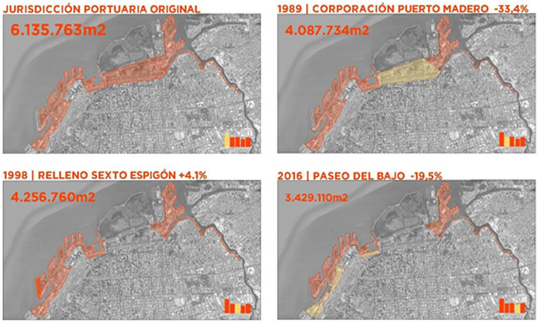
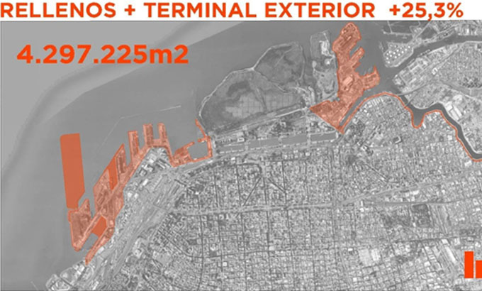
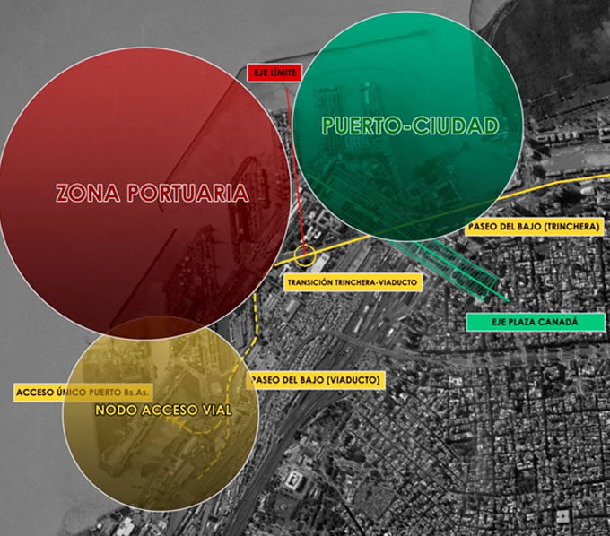
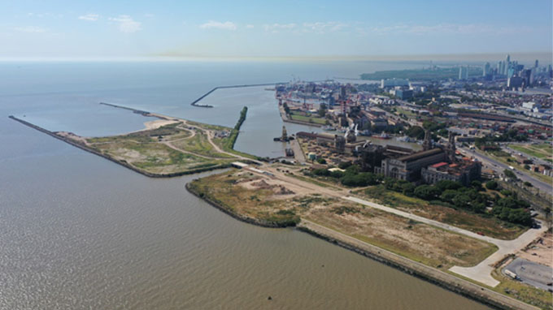
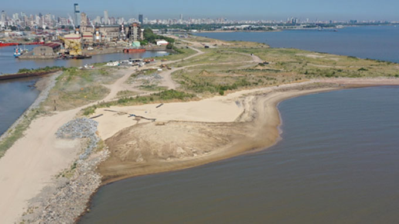

Una planificación para las áreas operativas del Puerto Buenos Aires
Ing. Ariel cherubini
El Puerto Buenos Aires se encuentra actualmente en un proceso de reconfiguración, en vistas de adaptarse a
los requerimientos del mercado mundial naviero. El Plan de Modernización del puerto tiene como objetivo
adaptar y generar la infraestructura necesaria para cumplir con dichos requerimientos. Esto se logra a
través de la generación de mayor superficie útil proyectando obras de relleno sobre el río sin afectar el
desarrollo urbano de la ciudad.
Plano Jurisdicción Puerto Buenos Aires – Pasado, Presente y Futuro:


Fuente: Imagen generada en la GIyDP del Puerto Buenos Aires - AGPSEReordenamiento territorial dentro de la jurisdicción portuaria
El proyecto de modernización del Puerto Buenos Aires, establece como necesario modificar la configuración centenaria
de espigones y dársenas y avanzar con la construcción de muelles corridos de más de 800 metros, capaces de atender de
forma eficiente más de un sitio de atraque en simultáneo de buques del tipo New Panamax. Atendiendo a esas necesidades,
y al desarrollo urbano de las zonas aledañas al puerto, es que el presente proyecto tiende a consolidar un movimiento hacia
el Norte de la actividad portuaria de carga, liberando espacio para la atención exclusiva de pasajeros y actividades conexas
en el sur del Puerto Nuevo de Buenos Aires, avanzar con el relleno hacia el Este del viejo relleno al Norte del Sexto
Espigón, conformándose en consecuencia una nueva superficie destinada a actividades logísticas y futura terminal de cargas
contenedorizadas.
En ese contexto, la Administración General de Puertos Sociedad del Estado (AGPSE) en su carácter de Autoridad Portuaria
nacional, tiene a su cargo el control y administración del Puerto Buenos Aires y por tal motivo, la ejecución de las
obras de infraestructura para la concreción del proyecto.
La planificación y los desarrollos urbanos de la Ciudad y la Nación deben articularse y tener una sinergia entre sí, para
lograr una convivencia y acercar a los ciudadanos al puerto y a sus actividades.
Reordenamiento Territorial en Puerto Nuevo

Fuente: Imagen generada en la GIyDP del Puerto Buenos Aires – AGPSEPara poder planificar la ampliación y modernización del puerto se han trazado los objetivos de esta reorganización territorial dentro de la jurisdicción de Puerto de Buenos Aires de la siguiente manera:
Conclusiones

(zonas de obras, rellenos, escolleras, vialidades)Fuente: Imagen generada en la GIyDP del Puerto Buenos Aires – AGPSE

(zonas de obras, rellenos, escolleras, vialidades)Fuente: Imagen generada en la GIyDP del Puerto Buenos Aires – AGPSE
Ariel CHERUBINI >
Gerente de Infraestructura y Desarrollo Portuario de la Administración General de puertos S.E.
Desde marzo del 2019
Ingreso a AGPSE, Julio de 2010
Estudios de grado cursados y concluidos
- Arquitecto, Facultad de Arquitectura Diseño y Urbanismo (FADU) de la Universidad de Buenos Aires (UBA), Argentina
- Maestría en Logística y Gestión Portuaria de la Universidad Politécnica de Valencia, España
Más de 25 años de experiencia como profesional en obras civiles y de Arquitectura.